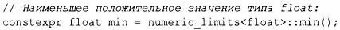

⇐13.8.3 function 13.9.1 iterator_traits⇒
Функция типа (type function) - это функция, которая вычисляется во время компиляции, с типом в качестве аргумента или возвращающая тип. Стандартная библиотека предоставляет множество функций типов, которые помогакrг разработчикам библиотек (и программистам в целом) писать код, который использует преимущества языка, стандартной библиотеки и кода в целом.
Для числовых типов numeric limi ts из заголовочного файла <limi ts> представляет различную полезную информацию(§ 14.7). Например:
Точно так же могут быть найдены размеры объекта с помощью встроенного оператора sizeof (§ 1.4). Например:
Такие функции типов являются частью механизмов С++ для вычислений во время компиляции, которые обеспечивают более строгую проверку типов и лучшую производительность, чем это было бы возможно в противном случае. Использование таких функций часто называют метапрогра.., мированием или (при использовании шаблонов) шаблонным метапрогршwмированием. Здесь я просто представлю два средства, предоставляемые стандартной библиотекой: iterator_traits (§ 13.9.1) и предикаты типов(§ 13.9.2). Концепты (§7.2) делают некоторые из этих методов излишними и упрощают многие из остальных, но концепты все еще не включены в стандарт и не являются общедоступными, поэтому представленные здесь методы широко используются программистами.